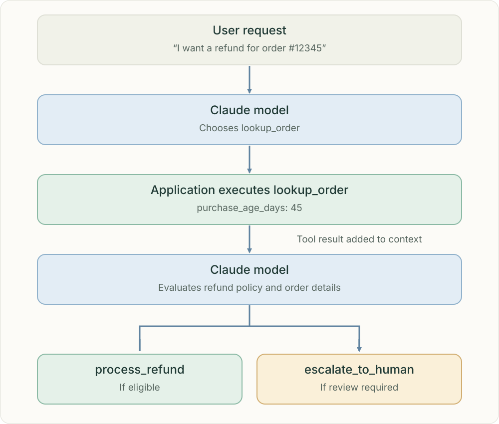

Act, observe, decide — repeat when needed.
An agentic loop alternates model decisions with tool execution. Each tool result updates the context for the next decision, until the agent can answer, needs human input or reaches a defined limit.

The model selects a tool, the application executes it and returns its result to context. The model then chooses a policy-compliant next step.
One cycle, step by step
Provide the goal, instructions, available tool schemas and current context. The model may request a tool call. Application code validates and executes that request, then returns the result. The next model call uses the updated context to choose another action or produce an answer. A tool call is not itself execution.
Worked example: refund an order
The model first chooses lookup_order. The application returns purchase_age_days: 45. The model evaluates this fact together with the applicable refund policy and exceptions. It may choose process_refund if eligible or escalate_to_human if review is required. Forty-five days alone does not establish eligibility.
Control side effects in application code
Before executing a refund, enforce authorization, policy checks and any required approval. Use idempotency for retryable actions. A model’s choice of a tool does not grant permission to execute it. Human escalation is a deliberate next action, not a failure of the loop.
Know when to stop
Stop when the goal is satisfied, a human must supply information or approval, or a step, time or cost limit is reached. Handle tool errors explicitly and avoid repeating the same unproductive action indefinitely.
One agent or many
An agent can use this loop without any subagents. In a multi-agent system, the coordinator and each specialist may run their own loops. Delegation changes who performs the work; the loop describes how that work progresses.
Related topics
Practice
What input is missing? Who owns the next action? What evidence must survive? Explain the failure before choosing a component.
Sources & scope
Anthropic · How we built our multi-agent research systemAnthropic · When to use multi-agent systems
Independent learning guide · Reviewed 25 October 2026.